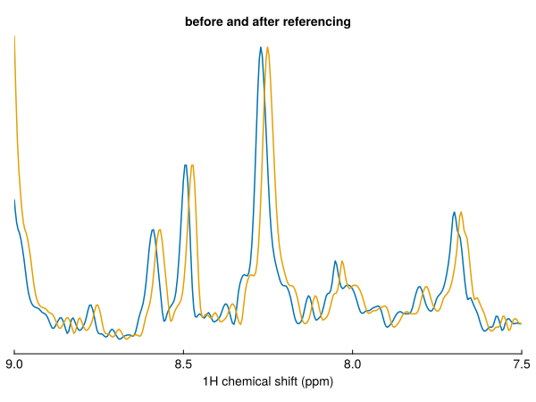

Reference chemical shifts
reference corrects the chemical shift referencing of a spectrum. Give the dimension and an old => new pair: where a reference signal currently appears, and where it should appear.
using NMRTools, CairoMakie
spec = exampledata("2D_HN")One dimension
moved = reference(spec, H1, 4.72 => 4.70)
first(dims(spec, F1Dim)), first(dims(moved, F1Dim))(11.07119, 11.05119)The dimension can be given as a nucleus (H1, N15, …), a dimension type (F1Dim, …) or a number:
reference(spec, H1, 4.72 => 4.70)
reference(spec, F1Dim, 4.72 => 4.70)
reference(spec, 1, 4.72 => 4.70)The axes move, not the data:
fig, ax, _ = nmrplot(spec[:, Near(121.0)]; title="before and after referencing", xlims=(7.5, 9))
nmrplot!(ax, moved[:, Near(121.0)])
The applied offset is recorded in each dimension's :referenceoffset metadata.
Indirect referencing
By default, referencing one dimension also references every other frequency dimension, using IUPAC Xi ratios. Correcting the ¹H reference of an HSQC therefore corrects its ¹⁵N axis too:
moved[F2Dim, :referenceoffset]-0.022631555309522773Pass indirect=false to reference only the given dimension:
only1h = reference(spec, H1, 4.72 => 4.70; indirect=false)
only1h[F2Dim, :referenceoffset]0.0The Xi ratios depend on the reference compound: DSS for aqueous samples, TMS for organic solvents. NMRTools decides which from the solvent in the spectrum's metadata, or you can choose:
reference(spec, H1, -0.12 => 0; aqueous=true) # DSS
reference(spec, H1, -0.12 => 0; aqueous=false) # TMSThe ratios are listed in Nuclei, coherences and Xi ratios.
Several dimensions
Give a vector of dimensions and a vector of pairs:
reference(spec, [H1, N15], [4.72 => 4.70, 120.0 => 118.5])Water referencing
For aqueous samples, reference(spec) references to the water signal, whose chemical shift depends on temperature:
δ(H₂O) = 7.83 − T / 96.9
where T is the temperature in kelvin, read from the spectrum's metadata unless given:
watershift(spec[:temperature])4.9713952528379775reference(spec) # temperature from metadata
reference(spec; temperature=298.15) # temperature in KBruker spectrometers typically set the water signal to 4.7 ppm when locking, so the correction is applied relative to this default.
In a pipeline
loadfid("expt/1") |> autoprocess |> reference(H1, 4.72 => 4.70)